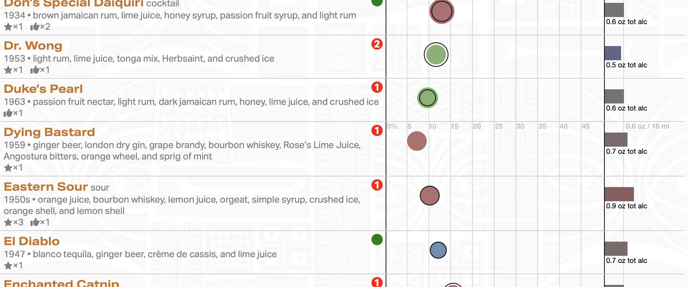

Total Tiki Online is web-based, so you can access it from all your devices.
The heart of Total Tiki Online is its database of “exotic” tropical drink recipes: over 250 authoritative historical recipes and over 60 carefully curated contemporary recipes. We’re frequently adding more recipes, so there’s always something new (or old!) to try. This recipe database, the life’s work of historian Beachbum Berry, is the de facto standard for Tikiphiles.
The database is deeply keyworded, and richly illustrated with period and original imagery from Beachbum Berry’s private collection.
Crucially, the recipes are cross-referenced by MixologyTech’s vast and capable ingredient database. With this ingredient database, you can create your own inventories and Total Tiki Online shows you which recipes you can make!
From there, the features go on and on: you can create lists of recipes, maintain your shopping list, annotate recipes with your adjustments, rescale recipes to fit your own glassware, calculate your ingredient needs for parties, and so on… You can even enter your own private recipes, and enjoy the same data-rich features as the curated content!
If Total Tiki Online sounds interesting, your next step is to create a FREE account, log in, and poke around. If you like what you see in demo mode, you can begin a subscription and enjoy full access. The basic subscription costs US$3/mo (quarterly). An enhanced subscription is available for those with lots of private recipes, and discounted annual subscriptions are also available.
For comparative details about subscriptions, as well as a comparison with our Total Tiki app for iPhone & iPad, click here.
Below are video tutorials for the service that you’re welcome to peruse for a detailed preview of what is offered:
• • •